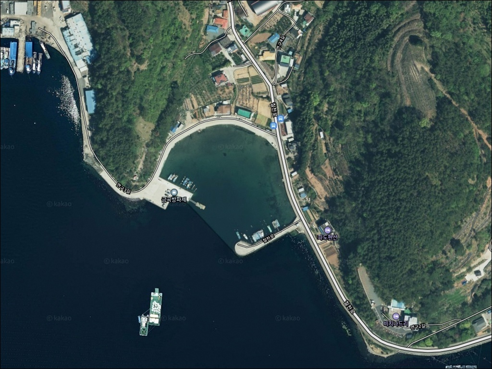
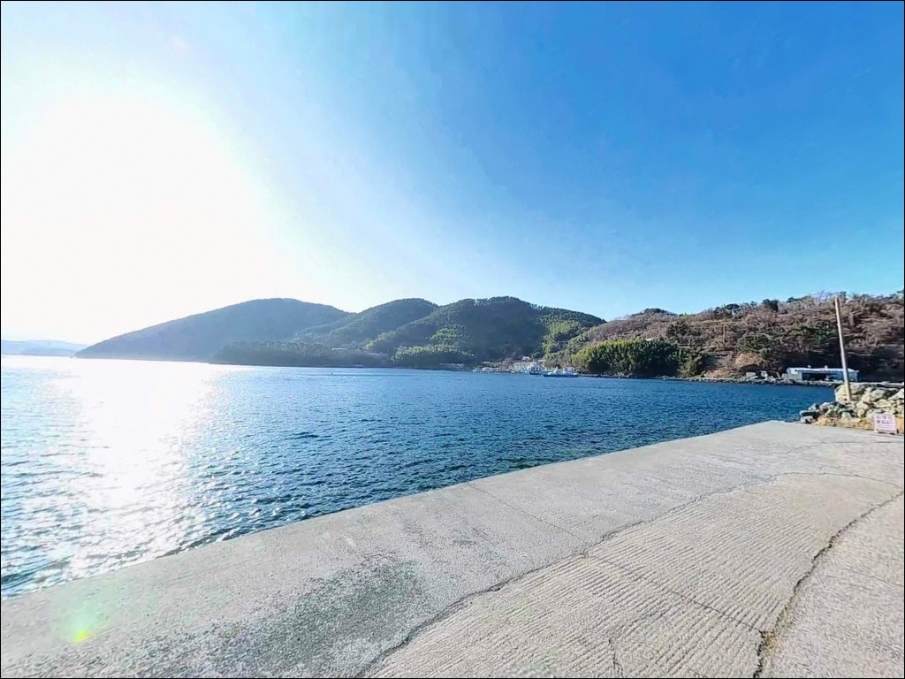
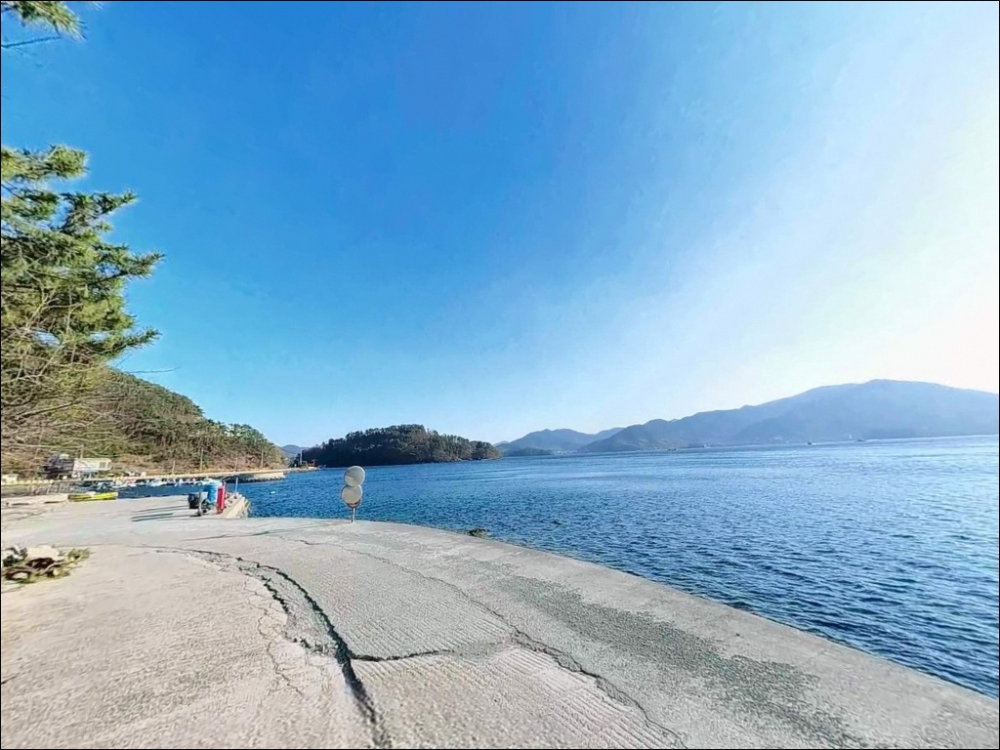
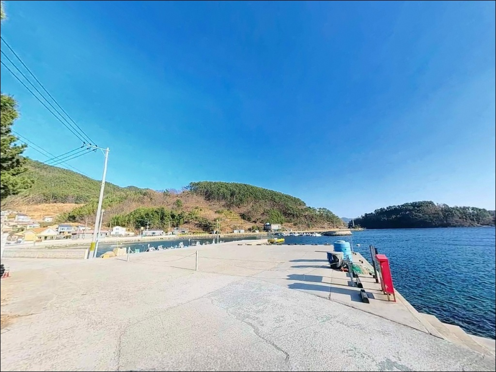
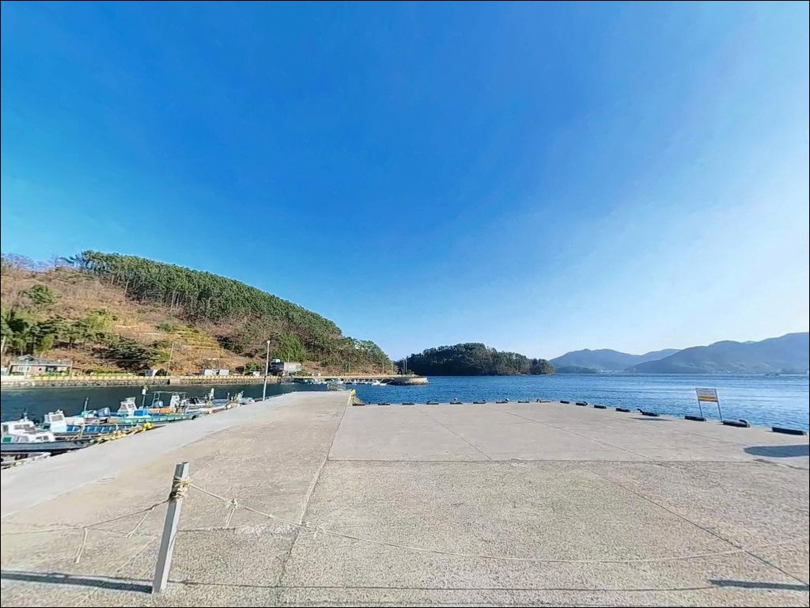
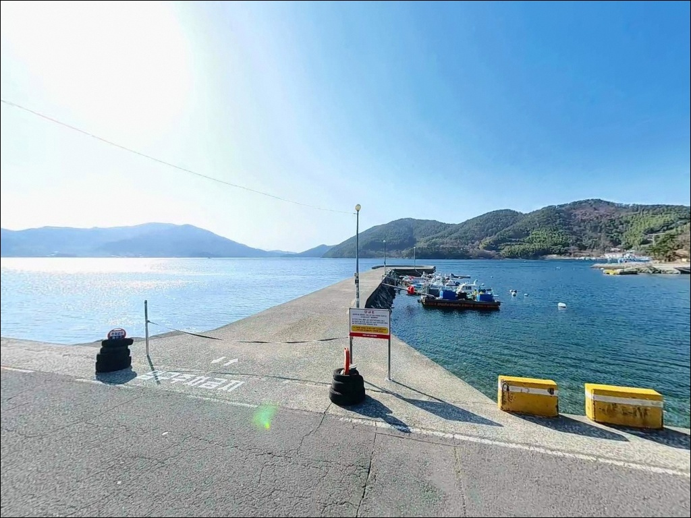
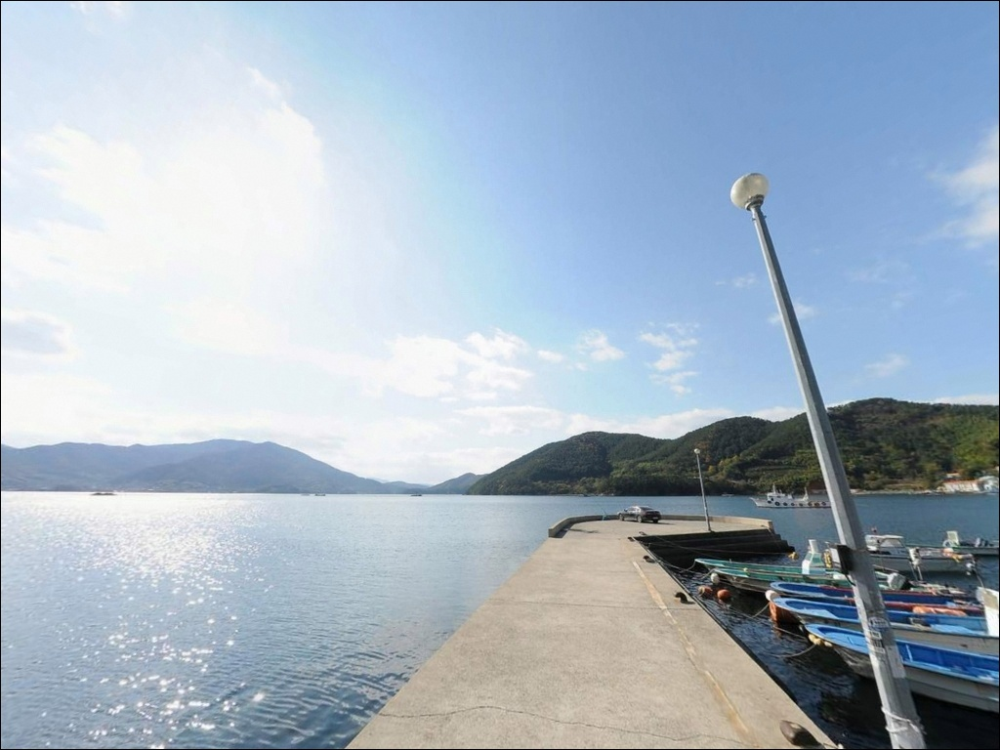
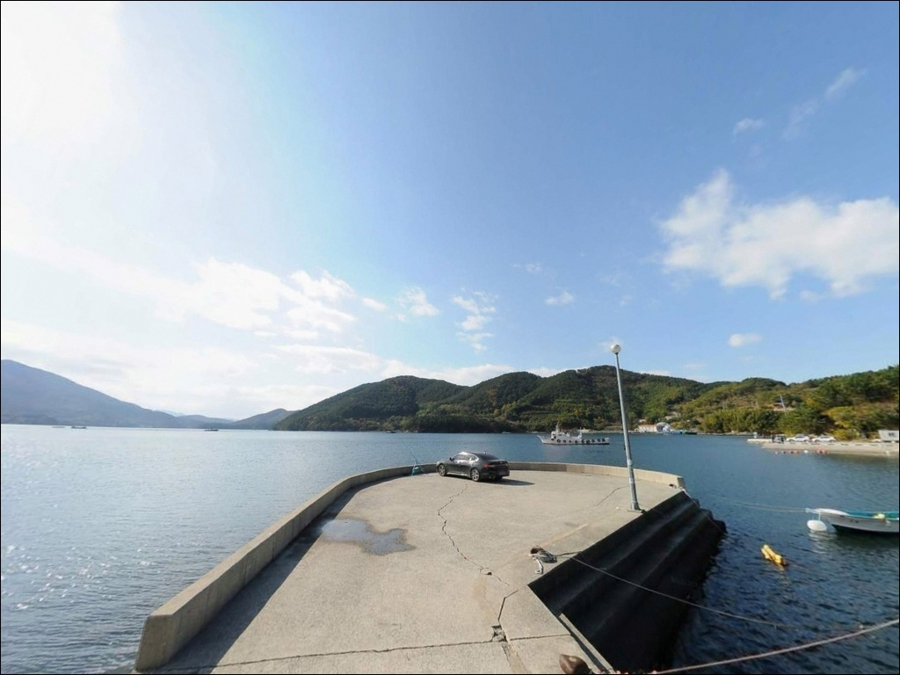
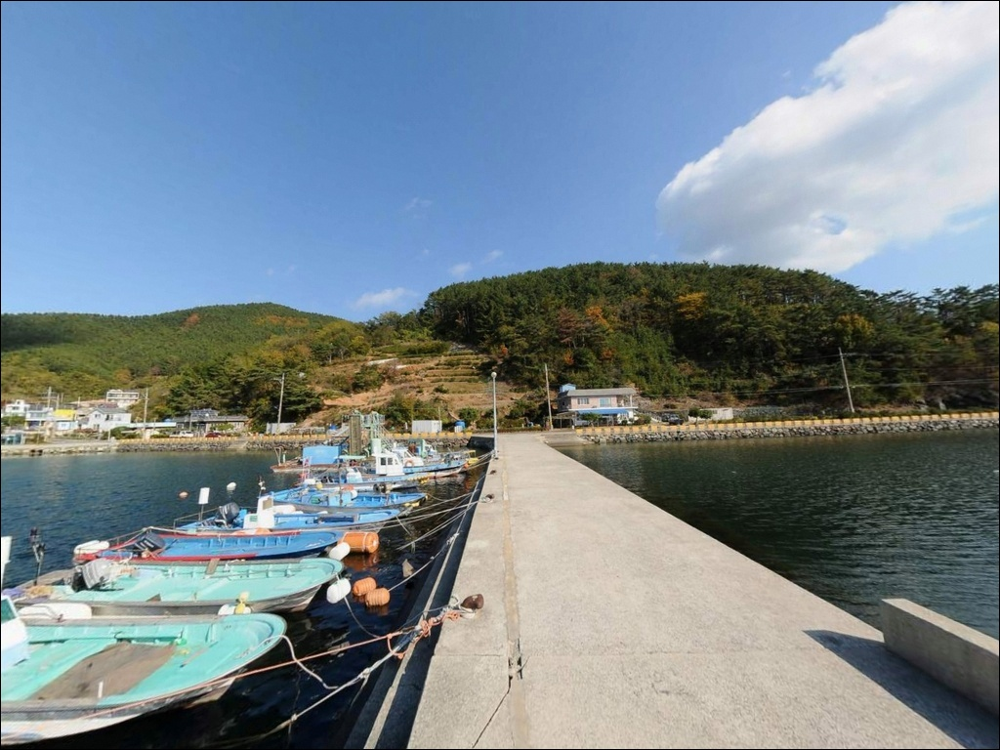

이 페이지에는 광고(제휴 링크 포함)가 있으며, 광고 링크를 통해 구매하면 운영자가 판매 수익 또는 수수료를 받을 수 있습니다. 포인트 사진: 카카오맵 스카이뷰·로드뷰. 이 페이지의 지도·사진 이미지는 카카오맵의 실제 서비스 이미지와 다를 수 있습니다.


수심 얕다고 자리 가볍게 보면 무입질, 거제 금곡방파제 외항 끝단 찌낚시
포인트 안내
금곡방파제
경남 거제시 하청면 연구리 429-4
수심이 얕다는 이유로 자리 선택을 가볍게 보면
금곡방파제에서 오랜 시간을 허비하게 됩니다.
외항 끝단과 내항 석축 라인은
조류가 닿는 방향이 다르고,
어종 접근 패턴도 분명히 갈리는 구조입니다.
이 글은 금곡방파제의 지형 구조와
낚시 방식별 공략 조건, 진입 환경,
차박 체류 여건에 집중합니다.
조황 단정이나 특정 어종 보장은
이 글의 범위에 포함되지 않습니다.

1. 포인트 위치 및 진입 동선 분석
금곡방파제는 거제도 북부 하청면 연구리 해안에 자리합니다.
서북쪽으로 칠천도가 자리 잡아
방파제 앞 수면은 칠천수도의 너울과 파도가
차단되는 내만 구조입니다.
진입은 거제도 북부 해안도로(58번 국도)에서
하청면 방향으로 들어선 뒤
연구리 해안을 따라가면 금곡마을에 닿습니다.
마을길은 아스팔트 포장 상태가 양호하나
1차선 구간이 포함되어 차량 교행이 어려운 구간이 있습니다.
대형 SUV나 캠핑카라면 출발 전
위성지도로 진입로를 미리 확인하는 편이 안전합니다.
방파제 앞 넓은 공터는 차량 10대 이상
동시 주차가 가능한 구조이며,
회차 공간도 충분히 확보됩니다.
수심이 얕은 내만 방파제일수록
조류가 닿는 방향과 외항 끝단 위치가
자리 선택의 핵심 기준이 됩니다.

2. 차박 환경과 야간 체류 여건
금곡마을은 민가 밀집도가 낮은 소규모 어촌입니다.
방파제 입구에 가로등이 설치되어 있어
야간 통행과 기본 시야 확보가 가능합니다.
방파제 앞 공터는 차박을 위한
평탄한 주차 공간으로 활용하기에 적합한 구조이며,
민가와 약간의 거리가 있어 프라이버시도 양호한 편입니다.
다만 방파제 현장에는 별도의 편의시설이 없습니다.
식수, 얼음, 연료, 낚시 소품 모두
출발 전 완비한 상태로 진입하는 것이 현실적입니다.
하청면 소재지까지 차량으로 약 5분 거리이므로
도착 전 마지막 보급 거점으로 활용하면
체류 중 불편을 줄일 수 있습니다.


3. 주변 편의시설 및 인프라 현황
금곡방파제 현장에는 별도의 편의시설이 없습니다.
반경 3~5km 거리의 하청면 소재지(하청리)에
편의점과 면소재지 상권이 형성되어 있어
출조 전·후 보급 거점으로 활용하기 좋습니다.
하나로마트와 낚시용품점도
하청면 소재지 권역 안에 있습니다.
응급 상황이 발생할 경우
거제시 고현동까지 차량으로 약 15분 거리에
대형 병원과 대형마트가 위치합니다.
섬 내부보다 교통 접근성이 양호한 거제도 본섬 포인트이므로
비상 대응 동선은 여유 있는 편입니다.

4. 출발 전 반드시 챙길 준비사항
금곡방파제는 내만 구조상 파도 영향이 적지만
바람이 조과를 가르는 변수로 작용합니다.
출발 전 기상청 해상 풍속 예보를 반드시 확인하고,
바다타임에서 하청면 기준 물때를 미리 계산해
초들물~중날물 타이밍에 맞춰 출발 시각을 잡는 것이
기본 전략입니다.
저질이 펄이라 밑걸림은 심하지 않지만
군데군데 수중여가 있어 채비 손실이 발생할 수 있습니다.
여분 채비는 넉넉히 챙기는 편이 좋습니다.
방파제 외항 구간은 이끼와 물기가 남아 있을 수 있어
미끄럼 방지 신발과 구명조끼는 필수입니다.
야간 낚시 시에는 헤드랜턴을 반드시 지참하고,
어민들의 어구와 조업 동선을 방해하지 않는
자리 선택이 기본 매너입니다.

5. 지형 기반 낚시 여건 분석
금곡방파제는 멸치막 맞은편에
약 60~100m 길이로 조성된 방파제입니다.
방파제 끝단을 기준으로 수심은 0.6~3.2m로
급변 없이 완만하게 이어지는
전형적인 내만 구조입니다.
저질은 펄이며, 군데군데 수중여가 발달해 있어
감성돔·볼락·도다리가 은신하기 좋은 지형입니다.
칠천도와 거제도 사이의 칠천수도는
창조·낙조류가 1.4~1.8kn 수준으로 흐르는 수로이지만,
금곡방파제 앞 수역은 칠천도가 직접 차단하는
내만에 해당해 조류 세기는 완만한 편입니다.
이 조류가 적정하게 흐르는 초들물~중날물 타이밍에
외항 끝단으로 어종 회유가 살아납니다.
칠천수도 방향으로 열린 외항 끝단은
내항 석축보다 어종 회유 밀도가 높은 구간입니다.
방파제 주변에 테트라포드는 없고
발판이 양호한 직벽 구조여서
다양한 낚시 방식으로 접근하기 수월합니다.
출조 전 최신 조황은 "금곡방파제 낚시",
"거제 하청면 조황", "칠천도 방파제 낚시" 키워드로
꼭 검색해 보시기 바랍니다.


6. 수심 얕은 내만 방파제에서
낚시 스타일 고르는 기준
이 포인트에서 가장 잘 어울리는 방식은 찌낚시입니다.
외항 끝단과 내항 석축 라인에서
감성돔을 겨냥하는 반유동·전유동 운용이 적합합니다.
수심이 얕으므로 찌 부력을 낮춰
채비가 천천히 가라앉도록 조절하는 것이
이 포인트 수심 조건에 맞는 기본 세팅입니다.
봄·가을 감성돔 시즌에 접근성이 높은 해역입니다.
원투낚시는 방파제 끝단에서
외항 방향으로 중·장거리 캐스팅할 때 효과적입니다.
펄 저질 특성상 도다리·노래미를 대상으로 하며,
밑걸림이 적어 부담 없이 운용할 수 있습니다.
조류가 빠진 간조 전후 시간대에
바닥을 천천히 끌어오는 방식이 유효합니다.
볼락 라이트게임도 이 포인트에 어울립니다.
방파제 주변 수중여 구간과 석축 틈새를
1~3g 지그헤드 채비로 탐색하는 방식이 기본입니다.
야간 가로등 불빛이 닿는 구간을 중심으로
천천히 리트리브하며 탐색하면
입질 반응을 살릴 수 있는 환경입니다.
겨울~이른 봄 저수온기에도 볼락은 유효한 대상어입니다.
에깅은 봄 갑오징어 시즌에
외항 방향으로 에기를 운용하는 방식입니다.
수심이 얕으므로 샬로우·슬로우 타입 에기를
활용하는 것이 이 내만 수심 조건에 맞습니다.

7. 대안 포인트와 플랜 B 동선
금곡방파제의 자리 여건이 여의치 않거나
주차 공간이 선행 차량으로 채워진 경우,
가장 가까운 대안은
옥계마을 방파제(약 400m)입니다.
같은 내만 해역 패턴을 공유하고 있어
어종 구성이 비슷하며, 이동 시간이 짧아
자리 여건을 빠르게 비교할 수 있습니다.
연구마을 방파제(약 1.5km)는
동일한 하청면 해역 안에 있어
같은 어종 패턴이 적용되는 대안입니다.
주차 공간 여건은 현장에서 직접 확인이 필요합니다.
조류 자극이 강한 환경을 원한다면
칠천대교 아래(약 2.4km)로 이동하는 쪽이 적합합니다.
칠천수도 본류 조류가 직접 흐르는 구간으로
금곡방파제보다 수심이 깊고 조류 흐름이 살아 있어
농어·감성돔 루어 및 찌낚시에 유리한 조건입니다.
이 일대에서 알려진 포인트이기도 합니다.

조용한 내만에서
자리 하나가 조과를 결정합니다
원투낚시나 찌낚시, 볼락 라이트게임을 즐기는 낚시인이라면
금곡방파제의 지형 조건은
부담 없이 접근하기 좋은 구조입니다.
파도와 너울 영향이 적고 발판이 양호해
채비 세팅과 자리 이동이 수월하며,
봄 갑오징어 에깅부터 겨울 볼락 라이트게임까지
시즌 폭도 넓은 편입니다.
반면 수심이 얕고 조류가 완만한 내만이라는 점에서
강한 조류 자극을 선호하거나
대형 어종을 집중 공략하려는 낚시인에게는
물이 빠른 칠천대교 아래 구간이
더 맞는 선택일 수 있습니다.
물때 확인, 자리 선택, 바람 방향 파악,
이 세 가지를 갖추고 진입한다면
거제 북부 내만의 조용한 포인트에서
낚시와 차박을 함께 즐기기 좋은 출조가 됩니다.